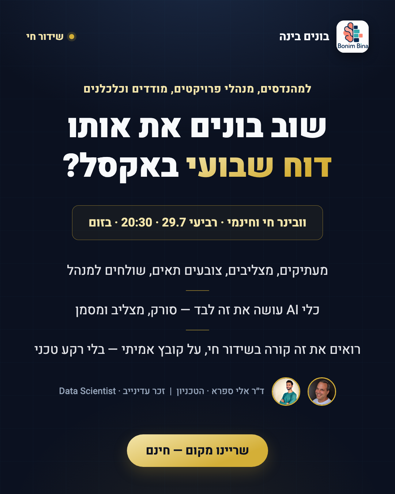
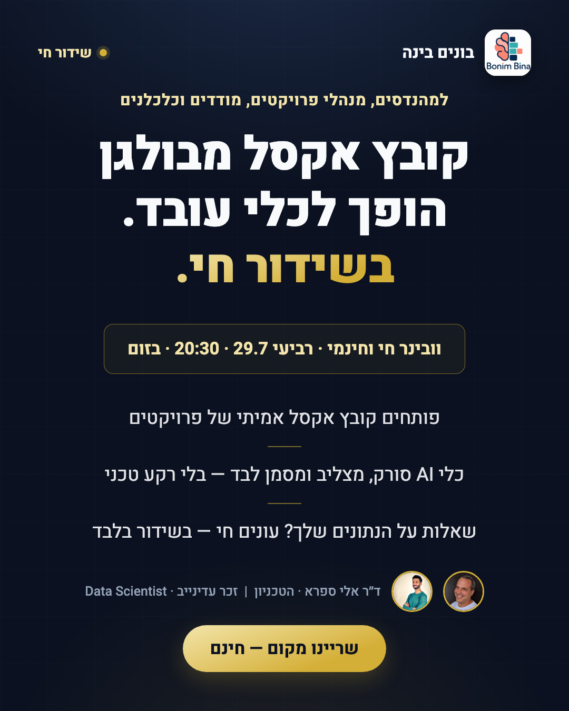
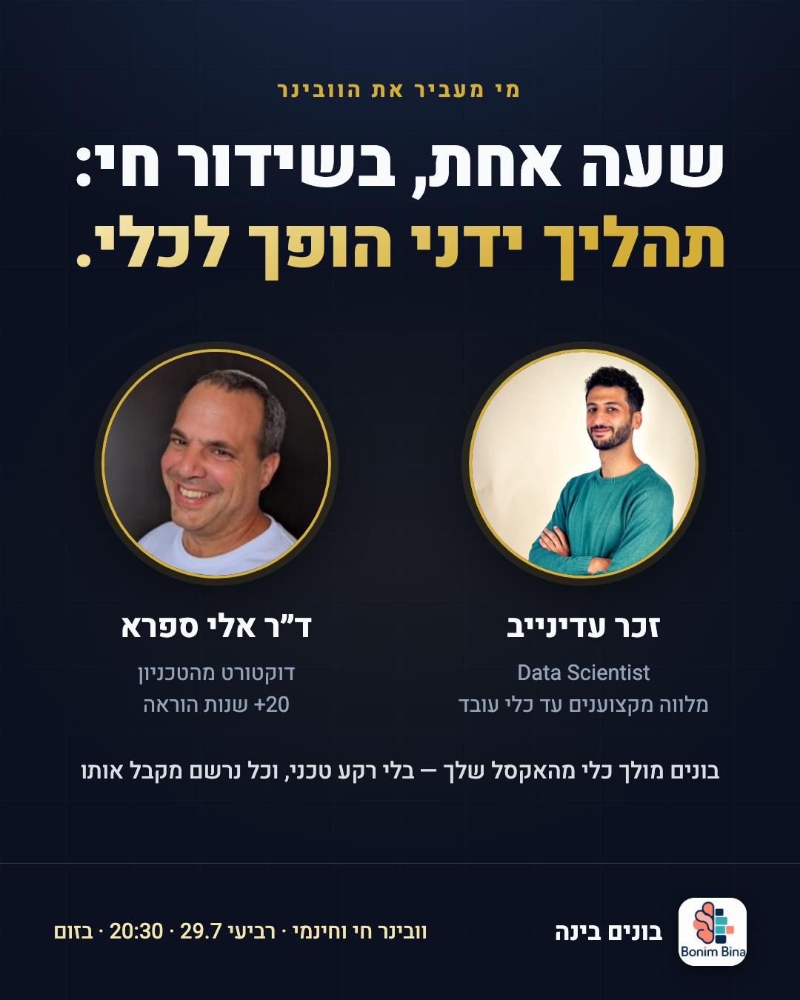

המסר: מייעלים תהליכי עבודה ידניים בעזרת כלי AI מתקדמים. כל מודעה נבחנה במבחן שתי-השניות — מהנדס בניין שמעולם לא כתב קוד חייב לזהות מיד את המשימה היומית שלו ואת ההבטחה: הכלי עושה אותה לבד.
סבב ראשון של מודעות (שיטת קונפליקט, הוכחת סקרים) נפסל על ידי זק: הפרסונה לא חיה בעולם הקורסים והטק — היא לא יודעת מה זה פייתון, וציון 9.6 מסקר לא אומר לה כלום. הבריף תוקן סביב היום האמיתי שלה: דוח סטטוס שבועי ידני, הצלבות בין גיליונות, הקלדות מ-PDF, חריגות שמתגלות מאוחר. שלושה כותבי AI כתבו מחדש 15 גרסאות מהבריף המתוקן, ושני שופטים דירגו: שופט-פרסונה (מבחן שתי-השניות) ושופט נאמנות-מסר. ארבע הזוכות למטה.
| Rank | Ad | Recognition judge | Message judge | Role |
|---|---|---|---|---|
| 1 | "הדוח השבועי" (CL-1) | 9.0 | 9.5 | Wave 1 |
| 2 | "הצלבות ידניות" (CL-3) | 9.0 | 9.5 | Wave 1 |
| 3 | "ישירה — ייעול עם AI" (CL-4) | 8.5 | 9.4 | Wave 1 |
| 4 | "קופי-פייסט מ-PDF" (CL-5) | 8.0 | 9.2 | Reserve, 24-48h swap |



11.8 שניות, אילם עם טקסט צרוב, תנועת זום עדינה: הצלבות ידניות → הדוח השבועי → ההזמנה. משודך לקופי של CL-1.
| Setting | Value |
|---|---|
| Objective | Leads → Instant Form, Higher Intent type |
| Budget | 400 ILS lifetime · end 29.7 at 20:00 |
| Ad set (one!) | Israel · 28-55 · Hebrew · interests: Civil engineering, Industrial engineering, Project management, AutoCAD, GIS, Surveying, Excel, Economics · Advantage expansion OFF |
| Placements | FB Feed + IG Feed (statics) · Reels (video only) |
| Ads wave 1 | CL-1 weekly-report · CL-3 cross-check · CL-4 direct (+video on Reels) |
| Form fields | Name · Email (manual entry!) · "מה התחום המקצועי שלך?" (הנדסה / כלכלה / תפעול / אחר) |
| Form intro card | וובינר חי וחינמי · רביעי 29.7 · 20:30 · בזום — תהליך ידני הופך לכלי אוטומטי, בלי רקע טכני |
| Thank-you screen | "בדקו את המייל" + כפתור הוספה ליומן / קבוצת WhatsApp |
| Auto-enhancements | OFF (RTL casualties) |
| Kill rule | 80-100 ILS spent, zero registrations → pause creative · check at 24h |